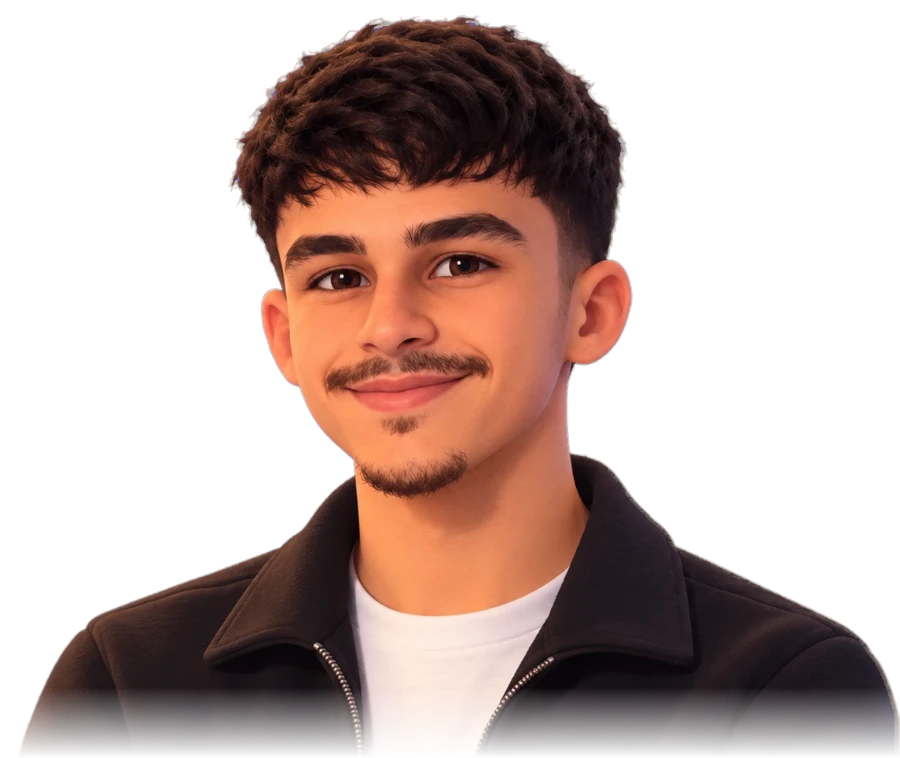

scroll
> whoami
Student leader at Western University, curious about how systems work under the hood. I spend my time exploring networking, cybersecurity, data science and software development, and digging into databases and the systems built on top of them.
Education & certificates
Certificates
Projects
Experience
Leadership & volunteering
Leadership
Volunteering
Interests
Terminal
Prefer the command line? Try